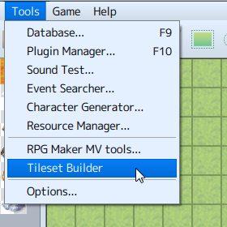

How to Use Aid Tools
Plugin Manager
With the [Plugin Manager] tool that you can open by going to [Tools] → [Plugin Manager], you can manage official plugins and ones that you have created.
When you click on a plugin displayed in the list, a dialog window will appear where you can change their ON/OFF switches and parameter values.
(March 1st, 2016 Update)
When typing parameter values, right-click to show the menu and choose [IconSet Viewer...] to display the IconSet Viewer.
Click one of the plugin parameters to open the menu.
You can make edits to plugin parameters on the [File] and the [Text] tabs.
Sound Test
With the [Sound Test] tool that you can open by going to [Tools] → [Sound Test], you can test the sound of music and sound files which are included in your project. Music will continue playing even after you close the window so you can use it to play background music as you are making your game.
The window is divided into 4 tabs: BGM (background music), BGS (background sound), ME (music effects) and SE (sound effects). You can assign music by clicking on the song in the File List of each tab. When you press [Play] the music will begin to play. Click [Stop] to stop the music.
You can adjust the Playback Volume (0 to 100%), Pitch (50 to 150%) and Pan (-100 to 100) by using their respective sliders.
Event Searcher
With the [Event Searcher] tool which can be opened by going to [Tools] → [Event Searcher], you can search events by their switches, variables and names and display them in a list.
Character Generator (November 24th, 2016 Update)
Open this tool by clicking on [Tools] → [Character Generator]. Here you can make character images allocated for actors and events.
Click on the [Male], [Female], or [Kid] tabs to change the screen, and choose the variation and color for each feature. Your selection will be displayed in the [Preview] area.
- Randomize
- Sets all the parts at random.
- Face Image
- Opens the export window for face images.
- Walk Character
- Opens the export window for walk characters.
- Damage Character
- Opens the export window for damage characters.
- Battler
- Opens the export window for side-view battlers.
- Save Settings
- Saves the settings of the character created.
- Load Settings
- Loads the saved character settings.
Export Window
- Import
- Loads a base image from a file and inserts a newly made image.
- Export
- Saves the image to a file.
Generate Dungeon
Right click the map data text in the Map List and select [Generate Dungeon] to open.

When you select wall and floor tiles, a map will automatically be drawn in maze form. The dungeon will be generated on your selected map, so be sure to increase the map size if you would like to make a large dungeon. If your map size is too small, you will not be able to make a very dungeon-like map.
- Type
- Choose between [Rooms] and [Maze] types. When you select [Rooms], a dungeon with rooms connected by passages will be generated. When you select [Maze], a dungeon with only passages will be generated.
- Options
-
- Add Margins
- When selected, margins will be added to the bottom, top, right, and left of the map.
- Wide passages
- When selected, passages will be widened.
- Wall
-
Select tiles to be used on walls.
* Select from the A4 (Wall) tileset being used. - Floor
-
Select tiles to be used on floors.
* Select from the A5 (Floor) tileset being used.
Playtest
You can test play your game at any point during creation using the Playtest feature which can be executed by going to [Game] → [Playtest] in the Menu Bar. Using this, you can see whether or not settings and events run as intended upon the release of your game.
- Using the Debug Feature
- The Debug Screen will be displayed when you press F9 on the keyboard during Playtest. You can change switches and the values of variables currently displayed using this screen.
* Press [F9] or the cancel button while in the Debug Screen to return to the Playtest.
To change the value of variables, select the target switch/variable (S at the top being the switch, V being the variable, and the number being the range of numbers), then click the action button, and a cursor will appear in the list on the right at the target switch/variable. The ON/OFF values for switches are changed using the action button, and variables are changed using the left and right direction buttons or L/R buttons. - How to Use Developer Tools
-
Press the F8 key during a Playtest to open Developer Tools. Developer Tools have the same function as those built-in to Google Chrome. You can check each element of the game constructed in HTML5.

- Quitting Playtest
- To quit testing your game, press the X button to close the window.
Resource Manager (March 1st, 2016 Update)
In [Resource Manager], under [Tools] → [Resource Manager], you are able to manage resources included in your project. Each function for the buttons and parts displayed in the window is explained below. To use your original files (including images/audio/etc.) in creating a game, you are required to follow the predetermined standard. Please refer to [Asset Standards] for more information.

- Folder List
- On the left side of the window, a list of folders containing resource files will be displayed. When importing a resource file, choose the folders according to your purpose of use.
- File List
- On the right side of the window, the list of files contained in the chosen folder will be displayed.
- Preview
- Displays the preview of the image file chosen under the [File List]. To check a sound file, use the tool [Sound Test].
- Import
-
Imports project resource files. Click [Import] after choosing the folder location in [Folder List] and then choose the resource file to import.
You can import multiple files at once by selecting multiple files. (April 21th, 2016 Update) - Export
- Saves a project resource file outside of the project. The exported resource file will remain in the project after exporting.
- Delete
-
Deletes resource file chosen in [File List]. Be careful as deleted data cannot be recovered.
You can delete multiple files at once by using the Shift key to select multiple files. (April 21th, 2016 Update) - DLC (For Steam versions only) (April 21th, 2016 Update)
- You can download resources from the internet and use them in your game.
Options (April 21th, 2016 Update)
You can open the [Options] window by going to [Tools] → [Options]. Here, you can change the Transparent Color settings as well as the Map Grid settings.
- Transparent Color
- Sets the color to use as the transparency background in the editor.
- Map Grid
- By checking off the [Show] box, the Map Editor grid will be activated.
- UI
-
- Theme
- Changes the appearance of the editor.
- Object Selector (August 4th, 2016 Update)
-
Choose an object selector for selecting in-game objects in the editor like Items, Weapons, Armors, and so on.
［Dropdown］・・・Optimized for less than 100 objects.
［Extended］・・・Optimized for hundreds of objects.
［Smart］・・・Chooses one based on the amount of objects automatically.
Tutorials (Beta) (March 21st, 2017 Update)
You can see a list of available tutorials by opening [Tools]→[Tutorials (Beta)]→[Select Tutorial (Beta)]. Choose the topic that you would like to learn more about, then start the tutorial (beta).
Follow the on-screen instructions to proceed through the tutorial (beta).
RPG Maker MV Tools (March 21st, 2017 Update)
You can manage tools via [Tools]→[RPG Maker MV Tools].
*Requires RPG Maker MV Tools (sold separately.)
- Additional Tools
-
View a list of tools that have been added.
- Delete
- You can delete tools by selecting them from the list.
 - Found Tools
-
Searches for and displays tools found in RPG Maker MV Tools.
- Add
- Adds the selected tool to the list of Additional Tools.
- Select Path
- If a tool does not automatically appear in the list of Additional Tools, it is possible to manually add it by clicking [Select Path] and navigating to the folder where the tool was installed.